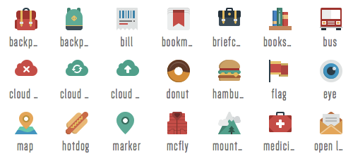

1. What is SVG
2. Using SVG
3. Adding SVG to the site
4. Basic shapes SVG
5. Animations
6. Working with svg (path, fill, use, gradients, filters, mask and etc)
7. Advantages SVG
What is SVG
Logos and icons
Maps and infographics
Visual effects
Using SVG
Illustrations and drawings
Animation
Adding SVG to the site
Tag Img

.element { background-image: url(/images/image.svg) }
Inline SVG to HTML
Basic shapes SVG
Rectangle
x,y — coordinates of the upper left corner of the figure; width, height — width and height of the rectangle.
Circle
r — circle radius; cx, cy — coordinates of the circle center.
rx, ry — horizontal and vertical radii of the ellipse; cx, cy — coordinates of the ellipse center
Poligon
The points are specified x,y-coordinates of the vertices of the figure, separated by a space.
Line
x1, y1, x2, y2 — coordinates of the beginning and end of the line.
Animations
Working with svg
fill- filling the figure
stroke- stroke color
stroke-width- stroke thickness, default - 1
g, defs, symbol- grouping and reusing elements
path- a more complex version of the line. With it you can draw line, polyline, polygon, circle, rect
Use (reusing SVG elements)
Gradient
SVG-mask
Advantages SVG
Scalable
Human-readable code
You can write by hand
Source
Reusable components
Inside - CSS and JavaScript
Good browser support
Availability
FOR FREE!